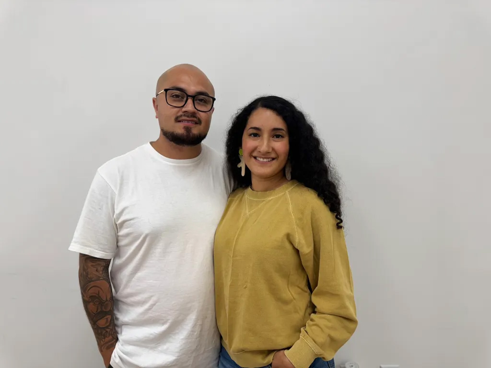

Ink Source: Trailblazing a new era for the Boston tattoo community
If asked to imagine a tattoo studio, you might conjure images of neon signs, buzzing ink guns, and bad decisions. But Ink Source, one of the city's newest parlors as of Spring 2024, is actively looking to counter that image with bright white walls, lush alocasia plants, and booming Spanish pop music that greet you when you enter. Co-owners Estefani Benitez and Daniel Sanchez told us they are the first Latino owned shop in Boston, despite around 20% of the city's population identifying as Latinx. These new business owners discussed how they hope to transform the ink scene in Boston to be more inclusive of people of all skin tones and make high-quality and professional tattooing more accessible to their local Roxbury community.
Who are you and how did you end up in Roxbury?
Estefani Benitez: I was born in El Salvador; I came here when I was two years old and was raised in Jamaica Plains and Roslindale. I'm a longtime Boston person, and I'm also the owner of Ink Source with Daniel.
Daniel Sanchez: I was born in Guatemala City and raised in a small city called Grande Prairie, Alberta in Canada. I'm the main artist at Ink Source.
What is Ink Source? How did you create the name?
Benitez: We didn't want Ink Source to be tattooing, because we have other things that we do with ink. We have permanent makeup; We have airbrush tattoos; We have my husband who is a professional airbrush artist.
What is the most difficult, or the most gratifying aspect of starting a business? Specifically in relation to the setting of Roxbury and Boston?
Benitez: There's a level of faith to it! The reason that we chose Roxbury was because I went to school in Roxbury. And, historically, Roxbury has been disinvested in because a lot of businesses typically don't want to be in neighborhoods that are seen as not as 'good' as other neighborhoods. I foresee a vision for Roxbury in 10 years or 20 years, and it's very powerful. They're trying to bring back, you know, Black Wall Street and so many things that Roxbury used to represent before all the urban renewal that happened that stripped it of so many things. So, we wanted to play a part in investing in the community. We want to provide the service of tattooing well on black people and of color people, because that's a big thing for us: knowing how to tattoo on the color of our skin.
How have your Latino identities influenced your approach to owning a business and tattooing?
Sanchez: Being Latino, the [tattoo] style is very different from a lot of other artists here in Boston. Going to Guatemala as a kid and stuff, there are so many artists in Latin America, and they're so good. And on the West Coast, with such a heavy Central American and Mexican population, you see a lot of that Mayan and Aztec-inspired type of artwork. I was always fascinated with that type of stuff: airbrushing, low riders and cars, etc. I feel like that is very strong in the Latin community, and that's what I grew up looking at and watching. So, when I came here, that's not really part of the East Coast culture. It's cool to be able to bring some of that flavor out here.
Benitez: In other states, the Latinx community dominates these [tattooing] industries, but here in Boston, is something completely different. The Latino community is very diverse. We have such a variety of culture as Caribbeans, South Americans, and Central Americans. We're very unique and diverse within our community. And I think that that brings a level of warmth, you know, when we meet each other. When you hear someone talking Spanish or playing Spanish music, [we're] just like: "Whoa, oh my gosh!" [We] feel like [we're] in [our] living room. So, I think that's really special. That's how [being Latinx] influenced a lot of the things we do.
Anything else you'd like to add?
Benitez: We're looking forward to everything that's going on, we're offering a wide variety of services. We have such a big reach, with our permanent makeup offerings, but then we also have ephemeral tattoos, which is really great because they fade within three years. It's nice because not everybody wants a permanent [tattoo].
Our approach is very educational. I like people feeling well informed. Design is so important, and Dan puts so much work into making sure that those designs are coming out as close to what that client is wanting. It's really great collaborating with clients in developing their design.
Sanchez: Yeah, I feel like this industry has a stigma or something, where people have this idea that it's, like, rough and tough type of people [that tattoo]. At Ink Source we've addressed that we're just artists, you know, and that that's what I want for this place, is just being people who love art and there are no egos. I think that's what it comes down to, ultimately: good customer service and good art.
I think that by showing people that [tattooing] is a very professional industry, that'll get rid of the stigma that people have toward tattooing and help people to feel comfortable coming in here without having an expectation of a dark type of vibe. The color and the vibe of the shop in general, is a very good representation who we are and the vibes that we're trying to bring to this industry.
Co-owners of Ink Source, Daniel Sanchez and Estefani Benitez in their tattoo shop in Boston, MA, on Monday, Oct. 7, 2024. (Photo/Sofia Baah).
← Back to Portfolio